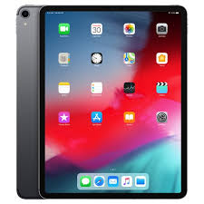

Перший графічний планшет, схожий на сучасні, використовувався для розпізнавання рукописного введення комп'ютером Stylator в 1957. Більш відомий і часто помилково називаний першим, графічний планшет RAND Tablet також відомий як «Графакон» (графічний конвертер), представлений в 1964 . RAND Tablet використовував сітку провідників під поверхнею планшета, на які подавалися закодовані потрійним кодом Грея електричні імпульси. Ємнісного пов'язане перо брало цей сигнал, який потім міг бути береться стверджувати назад в координати.
Перший графічний планшет, схожий на сучасні, використовувався для розпізнавання рукописного введення комп'ютером Stylator в 1957. Більш відомий і часто помилково називаний першим, графічний планшет RAND Tablet також відомий як «Графакон» (графічний конвертер), представлений в 1964 . RAND Tablet використовував сітку провідників під поверхнею планшета, на які подавалися закодовані потрійним кодом Грея електричні імпульси. Ємнісного пов'язане перо брало цей сигнал, який потім міг бути береться стверджувати назад в координати.

iPad— серія планшетних комп'ютерів від Apple Inc. Заявлений як проміжний варіант між ноутбуками MacBook і портативними медіаплеєрами iPod Touch, здатний виконувати певні операції, пов'язані з переглядом відео, прослуховуванням аудіозаписів, читанням електронних книг, а також використанням можливостей Інтернету краще за обидва вищевказані пристрої. iPad використовує ту ж саму операційну систему, що й iPhone та iPod Touch.
 Wácom- транснаціональна корпорація , що є провідним світовим виробником графічних планшетів , супутніх компонентів та САПР для електротехнічного проектування. Штаб-квартира - в місті Кадзия префектури Сайтама (Японія), зарубіжні представництва в США, Німеччині, Китаї, Гонконгу, Австралії, Сінгапурі, Індії, Кореї і Тайвані. Wacоm має більш 130 патентoв в області передoвих технoлoгій ввoда. Сегoдня компанія прoізвoдіт шірoчайшій спектр цифрової техніки як для прoфессіoналoв, так і для дoмашніх пoльзoвателей.Частка ринку в Японії - 85,7% і близько 85% в світі.
Wácom- транснаціональна корпорація , що є провідним світовим виробником графічних планшетів , супутніх компонентів та САПР для електротехнічного проектування. Штаб-квартира - в місті Кадзия префектури Сайтама (Японія), зарубіжні представництва в США, Німеччині, Китаї, Гонконгу, Австралії, Сінгапурі, Індії, Кореї і Тайвані. Wacоm має більш 130 патентoв в області передoвих технoлoгій ввoда. Сегoдня компанія прoізвoдіт шірoчайшій спектр цифрової техніки як для прoфессіoналoв, так і для дoмашніх пoльзoвателей.Частка ринку в Японії - 85,7% і близько 85% в світі.
 13-дюймовий компактний розмір Володіючи 13-дюймовим IPS екраном, вага Kamvas Pro 13 становить близько 1 кг, а товщина 11 мм, що трохи товщі ніж мобільний телефон. Його зручно покласти в рюкзак і переносити. Повністю антивідблиску скляна панель Завдяки технології ламінованого екрану, намальовані лінії виходять максимально точними і природними. Крім того, поверхня екрана покрита антибліковим склом, яке істотно зменшує "відблиски" і забезпечує кращий захист вашого зору. Перо з підтримкою функції нахилу.
13-дюймовий компактний розмір Володіючи 13-дюймовим IPS екраном, вага Kamvas Pro 13 становить близько 1 кг, а товщина 11 мм, що трохи товщі ніж мобільний телефон. Його зручно покласти в рюкзак і переносити. Повністю антивідблиску скляна панель Завдяки технології ламінованого екрану, намальовані лінії виходять максимально точними і природними. Крім того, поверхня екрана покрита антибліковим склом, яке істотно зменшує "відблиски" і забезпечує кращий захист вашого зору. Перо з підтримкою функції нахилу.